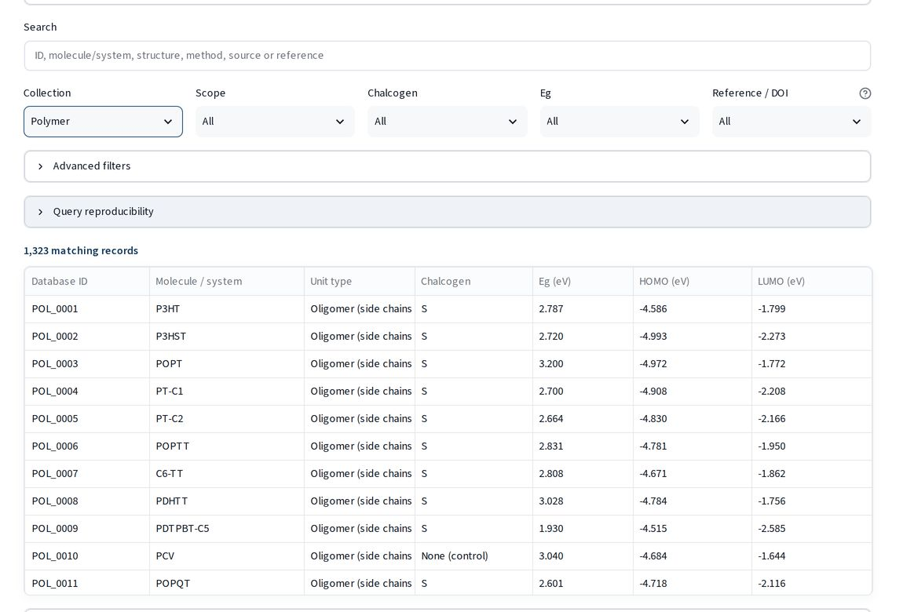

Curated electronic-property data on how sulfur, selenium and tellurium tune the band gap of donor–acceptor semiconducting materials. Every value keeps its source and level of theory.
Source records and standardized structures are kept apart, so the same molecule reported in several studies stays traceable to each of them. Values from different levels of theory are never pooled.
Donor–acceptor molecules with exact structures and 3D coordinates.
B3LYP/6-311+G(d)Chalcogen oligomer series from monomer to extrapolated polymer.
B3LYP · LC-BLYP · PCMConjugated polymers with experimental optical gaps and oligomer DFT values.
Experiment · B3LYP-D3/6-31G*Thia-, seleno- and telluro[n]helicenes against CCSD(T), plus Se/Te monomers.
CCSD(T) · 13 functionals
Bringing the collections together makes it possible to test chalcogen effects against experiment and against high-level reference gaps.
In 139 polymer pairs that differ only by S→Se substitution, the experimental optical gap dropped in 84% of cases (mean −0.05 eV). Oligomer DFT shows the same direction in 90%.
Mean absolute error of the DFT HOMO–LUMO gap against the CCSD(T) fundamental gap, chalcogen [n]helicenes.
The full release is distributed as versioned files with SHA-256 checksums. No account or API key is needed.
import pandas as pd BASE = ("https://raw.githubusercontent.com/" "EsraDogan539/molecular-descriptor-platform/main/") records = pd.read_csv(BASE + "data/public/chalmoldb_records.csv") # tellurium systems with an exact structure te = records[(records.Te_Count > 0) & records.InChIKey.notna()]
Doğan, E. N.; Kayı, H. ChalMolDB: Chalcogen Molecular Database, Database v1.2. Zenodo, 2026.
https://doi.org/10.5281/zenodo.23558298
The concept DOI 10.5281/zenodo.22903549 covers all versions. A journal article describing ChalMolDB is under review.
Department of Chemical Engineering, Ankara University
Database design, data curation and software development.
ORCID 0000-0001-5755-7596Scientific direction and supervision of the project; computational chalcogen studies behind the external collection.
ORCID 0000-0001-7300-0325 · hkayi@ankara.edu.tr